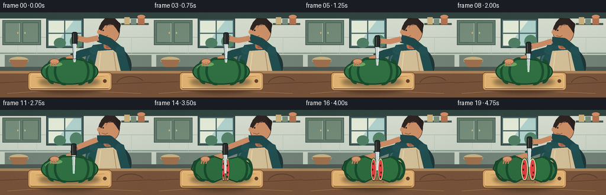
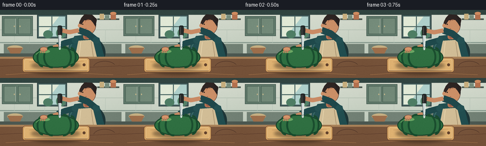
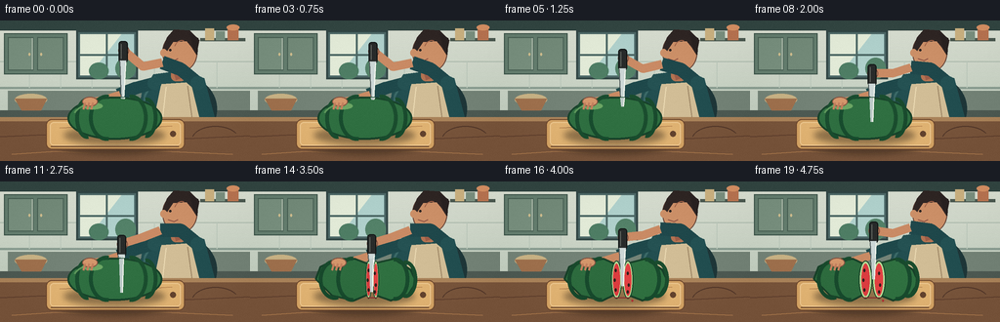

CODING AGENTS AS PIXEL WORLD MODELS
traex/GPT-5.6-Sol · motion_rationality_0008
点击播放 · 原生 RGB 像素
逐轮保存的候选
回放视频、检查图与代码变化。
每份候选均可单独播放。实际图片检查记录在下方工具轨迹中。
候选 01播放与检查图
点击播放 · 原生 RGB 像素

展开代码变化
--- 上一保存版本
+++ 本次保存版本
@@ -0,0 +1,244 @@
+from pathlib import Path
+import math
+import numpy as np
+from PIL import Image, ImageDraw, ImageFilter
+import artifact_io
+
+# Procedural, hand-illustrated animation. Everything is rendered at 3x and
+# reduced with Lanczos so the small output retains clean silhouettes.
+W, H, N = 256, 144, 20
+S = 3
+
+def sm(x):
+ x = max(0.0, min(1.0, x))
+ return x*x*(3-2*x)
+
+def ease(frame, a, b):
+ return sm((frame-a)/(b-a)) if b != a else float(frame >= b)
+
+class Painter:
+ def __init__(self, im):
+ self.im = im
+ self.d = ImageDraw.Draw(im, 'RGBA')
+ def xy(self, seq): return tuple(int(round(v*S)) for v in seq)
+ def ellipse(self, box, fill, outline=None, width=1):
+ self.d.ellipse(self.xy(box), fill=fill, outline=outline, width=max(1,int(width*S)))
+ def rect(self, box, fill, outline=None, width=1):
+ self.d.rectangle(self.xy(box), fill=fill, outline=outline, width=max(1,int(width*S)))
+ def roundrect(self, box, r, fill, outline=None, width=1):
+ self.d.rounded_rectangle(self.xy(box), radius=int(r*S), fill=fill, outline=outline, width=max(1,int(width*S)))
+ def poly(self, pts, fill):
+ self.d.polygon([self.xy(p) for p in pts], fill=fill)
+ def line(self, pts, fill, width=1, joint='curve'):
+ self.d.line([self.xy(p) for p in pts], fill=fill, width=max(1,int(width*S)), joint=joint)
+ def arc(self, box, start, end, fill, width=1):
+ self.d.arc(self.xy(box), start, end, fill=fill, width=max(1,int(width*S)))
+
+
+def soft_shadow(im, box, alpha=70, blur=4):
+ lay = Image.new('RGBA', im.size, (0,0,0,0))
+ d = ImageDraw.Draw(lay)
+ d.ellipse(tuple(int(v*S) for v in box), fill=(21,15,12,alpha))
+ lay = lay.filter(ImageFilter.GaussianBlur(blur*S))
+ im.alpha_composite(lay)
+
+
+def render(frame):
+ # warm kitchen wall gradient
+ h, w = H*S, W*S
+ yy = np.arange(h)[:,None]
+ top = np.array([219,224,211.], dtype=float)
+ bot = np.array([181,196,181.], dtype=float)
+ mix = yy/(h-1)
+ bg = top[None,None,:]*(1-mix[:,:,None]) + bot[None,None,:]*mix[:,:,None]
+ bg = np.repeat(bg, w, axis=1).astype(np.uint8)
+ im = Image.fromarray(bg, 'RGB').convert('RGBA')
+ p = Painter(im)
+
+ # backsplash and architectural lines
+ p.rect((0,0,256,10), (53,72,68,255))
+ p.rect((0,68,256,70), (139,158,146,150))
+ p.line([(0,42),(256,42)], (174,188,174,130), 1)
+ for x in (30,62,94,126,158,190,222):
+ p.line([(x,42),(x,69)], (188,200,187,80), 1)
+
+ # upper cupboards, left, with bevels
+ p.rect((4,13,69,55), (101,126,111,255), (63,86,76,220), 1)
+ p.rect((8,17,34,51), (121,144,127,255), (74,97,85,180), 1)
+ p.rect((38,17,65,51), (116,139,122,255), (74,97,85,180), 1)
+ p.line([(33,18),(33,50)], (186,198,183,100), 1)
+ p.ellipse((29,33,31,36), (205,188,142,255))
+ p.ellipse((41,33,43,36), (205,188,142,255))
+
+ # sunlit window
+ p.rect((78,10,141,60), (78,105,104,255), (51,71,70,255), 2)
+ p.rect((82,14,137,56), (176,209,204,255))
+ p.poly([(82,14),(124,14),(91,56),(82,56)], (227,235,216,95))
+ p.line([(109,14),(109,56)], (77,104,101,255), 2)
+ p.line([(82,35),(137,35)], (77,104,101,255), 2)
+ # vague foliage beyond window
+ p.ellipse((118,38,139,60), (84,130,105,110)); p.ellipse((91,43,111,60), (79,126,101,100))
+
+ # shelf and a few restrained kitchen props
+ p.rect((205,18,251,21), (77,91,82,255)); p.rect((210,8,219,20), (203,178,130,255))
+ p.rect((221,11,230,20), (124,145,129,255)); p.rect((233,6,244,20), (184,117,83,255))
+ p.ellipse((232,4,245,10), (212,144,101,255))
+ p.rect((8,72,256,98), (116,131,119,255))
+ p.rect((0,92,256,101), (79,91,84,255))
+ # bowl on the far left
+ p.ellipse((15,75,48,87), (200,178,133,255)); p.poly([(15,80),(48,80),(42,92),(22,92)], (159,113,78,255))
+
+ # PERSON, all behind the foreground counter
+ # torso shadow and shirt
+ p.ellipse((142,55,222,126), (32,56,58,90))
+ p.poly([(157,55),(187,51),(209,59),(221,104),(142,104),(145,74)], (35,79,81,255))
+ p.line([(159,58),(148,77),(145,103)], (59,105,103,180), 2)
+ p.poly([(165,65),(195,63),(205,104),(157,104)], (210,190,151,255))
+ p.line([(170,68),(166,103)], (236,219,180,170), 1)
+ p.line([(192,67),(197,103)], (156,133,100,150), 1)
+ p.roundrect((175,45,190,62), 5, (181,116,83,255))
+
+ # head, facing down-left
+ p.ellipse((166,12,202,53), (205,145,105,255), (105,71,59,160), 1)
+ p.poly([(171,17),(178,9),(194,10),(204,20),(201,35),(196,27),(191,21),(177,22),(171,31),(166,30)], (49,40,38,255))
+ p.ellipse((164,29,171,37), (205,145,105,255)) # nose in profile
+ p.ellipse((173,29,175.5,31.5), (48,41,37,255))
+ p.line([(172,39),(178,41),(182,39)], (124,68,61,220), 1)
+ p.arc((178,20,194,39), 202, 287, (164,103,76,160), 1)
+ p.poly([(194,13),(203,18),(202,35),(198,30)], (43,36,35,255))
+ # neck shadow
+ p.poly([(177,50),(190,48),(188,58),(180,61)], (157,94,73,120))
+
+ # left sleeve and stabilizing arm (a continuous, plausible reach)
+ p.line([(158,64),(139,69),(121,76)], (31,73,75,255), 13)
+ p.ellipse((151,58,165,71), (37,82,83,255))
+ p.line([(123,76),(104,82),(91,84)], (201,139,100,255), 9)
+ p.ellipse((86,78,100,89), (211,151,109,255))
+
+ # Knife hand trajectory: setup, decisive downward cut, then small withdrawal.
+ cut = ease(frame, 2.0, 11.5)
+ lift = ease(frame, 13.0, 19.0)
+ hand_y = 42 + 24*cut - 12*lift
+ hand_x = 126 - 1.5*cut + 2*lift
+ elbow = (166-2*cut, 43+7*cut-3*lift)
+ # right sleeve, elbow and forearm
+ p.line([(202,64),(185,50),elbow], (32,73,76,255), 14)
+ p.ellipse((195,57,210,71), (37,82,84,255))
+ p.line([elbow,(146,47+10*cut-4*lift),(hand_x,hand_y)], (202,139,101,255), 9)
+ p.ellipse((hand_x-5,hand_y-5,hand_x+6,hand_y+6), (213,151,108,255), (131,82,66,120), 1)
+
+ # countertop foreground
+ p.rect((0,99,256,144), (121,86,61,255))
+ p.rect((0,99,256,103), (171,132,91,255))
+ # wood grain
+ p.line([(0,119),(45,117),(89,120),(137,118),(192,121),(256,118)], (89,59,45,100), 1)
+ p.line([(12,137),(57,134),(112,137),(168,134),(238,137)], (173,124,80,80), 1)
+ p.arc((196,108,245,137), 195, 330, (84,57,44,90), 1)
+
+ # chopping board with cast shadow
+ soft_shadow(im, (53,108,182,137), 90, 3)
+ p = Painter(im)
+ p.roundrect((47,101,189,132), 6, (211,163,101,255), (112,74,48,255), 1)
+ p.roundrect((51,104,185,128), 4, (225,180,116,255), (238,201,146,120), 1)
+ p.line([(61,110),(104,108),(143,110),(176,108)], (184,133,82,90), 1)
+ p.ellipse((174,113,180,119), (100,68,47,220))
+
+ # knife (behind the melon where it penetrates): blade length remains constant.
+ blade_tip_y = hand_y + 42
+ # dark handle first
+ p.roundrect((hand_x-4.5,hand_y-9,hand_x+4.5,hand_y+13), 3, (40,43,42,255), (16,20,20,255), 1)
+ p.line([(hand_x-2,hand_y-6),(hand_x-2,hand_y+9)], (96,100,94,160), 1)
+ # blade, slightly tapered toward tip
+ p.poly([(hand_x-3.5,hand_y+11),(hand_x+3,hand_y+11),(hand_x+1.0,blade_tip_y),(hand_x-2,blade_tip_y)], (205,216,215,255))
+ p.line([(hand_x+2.5,hand_y+13),(hand_x+0.7,blade_tip_y)], (248,251,241,230), 1)
+ p.line([(hand_x-3.5,hand_y+12),(hand_x-2,blade_tip_y)], (85,96,96,220), 1)
+
+ # watermelon shadow and the fruit itself. Split begins only when the blade has crossed it.
+ split = ease(frame, 11.0, 18.0)
+ soft_shadow(im, (65,108,169,127), 100, 3)
+ p = Painter(im)
+ if split < 0.06:
+ p.ellipse((69,78,166,122), (48,112,66,255), (25,67,43,255), 2)
+ # curved longitudinal stripes
+ p.arc((77,79,101,121), 82, 278, (27,78,48,240), 4)
+ p.arc((91,76,127,123), 83, 278, (25,77,47,240), 4)
+ p.arc((118,76,151,123), 263, 97, (27,78,47,240), 4)
+ p.arc((139,79,161,120), 263, 98, (26,75,46,230), 4)
+ p.arc((75,81,159,113), 190, 245, (93,151,91,120), 2)
+ p.ellipse((84,84,105,91), (108,166,100,110))
+ # visible incision tracks the blade down through the rind
+ if cut > 0.06:
+ top_y = 79.5
+ incision_end = min(120, blade_tip_y)
+ p.line([(hand_x,top_y),(hand_x-0.5,incision_end)], (20,54,36,255), 2)
+ p.line([(hand_x+1,top_y+2),(hand_x+0.5,incision_end)], (180,61,59,180), 1)
+ else:
+ gap = 1.0 + 7.0*split
+ bulge = 3.0*split
+ # two rind halves drift apart along the cutting board
+ left = [(69-gap*.45,100),(74-gap*.45,87),(90-gap*.45,79),(109-gap*.45,79),
+ (124-gap,84),(124-gap,116),(108-gap*.45,122),(86-gap*.45,117)]
+ right = [(126+gap,83),(145+gap*.55,79),(162+gap*.55,90),(168+gap*.55,103),
+ (160+gap*.55,116),(142+gap*.55,122),(126+gap,117)]
+ p.poly(left, (46,108,63,255)); p.poly(right, (48,113,65,255))
+ p.line(left+[left[0]], (24,65,41,255), 2); p.line(right+[right[0]], (24,65,41,255), 2)
+ # rind stripes remain attached to each half
+ p.arc((72-gap*.45,80,104-gap*.45,121), 75, 285, (25,74,45,255), 4)
+ p.arc((90-gap*.45,77,122-gap*.6,123), 82, 276, (25,75,46,255), 4)
+ p.arc((132+gap*.5,78,161+gap*.55,122), 262, 99, (25,75,46,255), 4)
+ p.arc((146+gap*.5,81,169+gap*.55,119), 260, 101, (27,77,46,255), 4)
+ # cut faces widen as the halves relax outward: pale rind then vivid flesh
+ facew = 2.0 + 11.5*split
+ lx = 124-gap
+ rx = 126+gap
+ p.ellipse((lx-facew*.34,81,lx+facew*.66,120), (185,220,151,255), (27,70,43,255), 1)
+ p.ellipse((lx-facew*.15,84,lx+facew*.47,117), (220,61,64,255))
+ p.ellipse((rx-facew*.66,81,rx+facew*.34,120), (186,221,151,255), (27,70,43,255), 1)
+ p.ellipse((rx-facew*.47,84,rx+facew*.15,117), (226,65,67,255))
+ # dark teardrop seeds on newly revealed flesh
+ if split > .38:
+ for xx, yy, ang in [(lx+1,91,0),(lx,101,0),(lx+1,111,0),(rx-2,94,0),(rx-1,106,0),(rx-2,113,0)]:
+ p.ellipse((xx-1.0,yy-1.7,xx+1.0,yy+1.7), (48,31,29,235))
+ # a thin wet red line at the cut base
+ p.line([(lx,119),(rx,119)], (137,43,47,140), 1)
+
+ # Stabilizing hand and fingers belong in front of the rind.
+ # It eases left as the melon separates.
+ lhx = 92 - 3*split
+ p.ellipse((lhx-8,78,lhx+8,88), (213,151,108,255), (130,83,66,110), 1)
+ for k in range(3):
+ p.line([(lhx-5+k*4,84),(lhx-7+k*4,91)], (194,128,94,255), 2)
+
+ # Repaint the portion of blade in front of the upper rind; this makes penetration legible.
+ if split < .15 and blade_tip_y > 79:
+ y2 = min(blade_tip_y, 118)
+ p.poly([(hand_x-2.6,79),(hand_x+2.0,79),(hand_x+.8,y2),(hand_x-1.6,y2)], (191,204,202,245))
+ p.line([(hand_x+1.7,79),(hand_x+.7,y2)], (247,250,240,220), 1)
+ elif split >= .15:
+ # after completion the knife is visible in the opening as it is withdrawn
+ y2 = min(blade_tip_y, 119)
+ p.poly([(hand_x-2.6,79),(hand_x+2.0,79),(hand_x+.8,y2),(hand_x-1.6,y2)], (194,207,205,245))
+ p.line([(hand_x+1.7,80),(hand_x+.7,y2)], (248,251,242,220), 1)
+
+ # foreground board glints and a tiny juice bead late in the shot
+ if split > .65:
+ p.ellipse((131+4*split,121,133+4*split,123), (175,48,51,190))
+ p.line([(52,129),(183,129)], (99,65,43,120), 1)
+
+ # Downsample and add a subtle fixed fine grain / vignette for a photographic finish.
+ rgb = im.convert('RGB').resize((W,H), Image.Resampling.LANCZOS)
+ arr = np.asarray(rgb).astype(np.int16)
+ rng = np.random.default_rng(24680) # fixed grain prevents distracting temporal sparkle
+ grain = rng.normal(0, 0.8, (H,W,1))
+ Y, X = np.ogrid[:H,:W]
+ vign = ((X-W/2)/(W/2))**2 + ((Y-H/2)/(H/2))**2
+ arr = arr + grain - np.clip(vign[...,None]*4.0,0,5)
+ return np.clip(arr,0,255).astype(np.uint8)
+
+
+def main():
+ frames = np.stack([render(i) for i in range(N)], axis=0)
+ artifact_io.save(frames, Path(__file__).resolve().parent)
+
+if __name__ == '__main__':
+ main()
候选 02播放与检查图
点击播放 · 原生 RGB 像素
展开代码变化
--- 上一保存版本
+++ 本次保存版本
@@ -118,7 +118,7 @@
# Knife hand trajectory: setup, decisive downward cut, then small withdrawal.
cut = ease(frame, 2.0, 11.5)
lift = ease(frame, 13.0, 19.0)
- hand_y = 42 + 24*cut - 12*lift
+ hand_y = 30 + 34*cut - 14*lift
hand_x = 126 - 1.5*cut + 2*lift
elbow = (166-2*cut, 43+7*cut-3*lift)
# right sleeve, elbow and forearm
@@ -144,7 +144,7 @@
p.ellipse((174,113,180,119), (100,68,47,220))
# knife (behind the melon where it penetrates): blade length remains constant.
- blade_tip_y = hand_y + 42
+ blade_tip_y = hand_y + 50
# dark handle first
p.roundrect((hand_x-4.5,hand_y-9,hand_x+4.5,hand_y+13), 3, (40,43,42,255), (16,20,20,255), 1)
p.line([(hand_x-2,hand_y-6),(hand_x-2,hand_y+9)], (96,100,94,160), 1)
候选 03播放与检查图

可观测工具轨迹
实际执行的命令与返回图片。
命令 1exit 0
/bin/bash -lc "cat prompt.txt && printf '\\n--- RULES ---\\n' && cat GENERATION_RULES.md && printf '\\n--- SPEC ---\\n' && cat task_spec.json"
命令 2exit 0
/bin/bash -lc "find . -maxdepth 2 -type f -printf '%p\\n' | sort"
命令 3exit 0
/bin/bash -lc "sed -n '1,240p' artifact_io.py"
命令 4exit 0
/bin/bash -lc "cat > generate.py <<'PY'
from pathlib import Path
import math
import numpy as np
from PIL import Image, ImageDraw, ImageFilter
import artifact_io
# Procedural, hand-illustrated animation. Everything is rendered at 3x and
# reduced with Lanczos so the small output retains clean silhouettes.
W, H, N = 256, 144, 20
S = 3
def sm(x):
x = max(0.0, min(1.0, x))
return x*x*(3-2*x)
def ease(frame, a, b):
return sm((frame-a)/(b-a)) if b "'!= a else float(frame >= b)
class Painter:
def __init__(self, im):
self.im = im
self.d = ImageDraw.Draw(im, '"'RGBA')
def xy(self, seq): return tuple(int(round(v*S)) for v in seq)
def ellipse(self, box, fill, outline=None, width=1):
self.d.ellipse(self.xy(box), fill=fill, outline=outline, width=max(1,int(width*S)))
def rect(self, box, fill, outline=None, width=1):
self.d.rectangle(self.xy(box), fill=fill, outline=outline, width=max(1,int(width*S)))
def roundrect(self, box, r, fill, outline=None, width=1):
self.d.rounded_rectangle(self.xy(box), radius=int(r*S), fill=fill, outline=outline, width=max(1,int(width*S)))
def poly(self, pts, fill):
self.d.polygon([self.xy(p) for p in pts], fill=fill)
def line(self, pts, fill, width=1, joint='curve'):
self.d.line([self.xy(p) for p in pts], fill=fill, width=max(1,int(width*S)), joint=joint)
def arc(self, box, start, end, fill, width=1):
self.d.arc(self.xy(box), start, end, fill=fill, width=max(1,int(width*S)))
def soft_shadow(im, box, alpha=70, blur=4):
lay = Image.new('RGBA', im.size, (0,0,0,0))
d = ImageDraw.Draw(lay)
d.ellipse(tuple(int(v*S) for v in box), fill=(21,15,12,alpha))
lay = lay.filter(ImageFilter.GaussianBlur(blur*S))
im.alpha_composite(lay)
def render(frame):
# warm kitchen wall gradient
h, w = H*S, W*S
yy = np.arange(h)[:,None]
top = np.array([219,224,211.], dtype=float)
bot = np.array([181,196,181.], dtype=float)
mix = yy/(h-1)
bg = top[None,None,:]*(1-mix[:,:,None]) + bot[None,None,:]*mix[:,:,None]
bg = np.repeat(bg, w, axis=1).astype(np.uint8)
im = Image.fromarray(bg, 'RGB').convert('RGBA')
p = Painter(im)
# backsplash and architectural lines
p.rect((0,0,256,10), (53,72,68,255))
p.rect((0,68,256,70), (139,158,146,150))
p.line([(0,42),(256,42)], (174,188,174,130), 1)
for x in (30,62,94,126,158,190,222):
p.line([(x,42),(x,69)], (188,200,187,80), 1)
# upper cupboards, left, with bevels
p.rect((4,13,69,55), (101,126,111,255), (63,86,76,220), 1)
p.rect((8,17,34,51), (121,144,127,255), (74,97,85,180), 1)
p.rect((38,17,65,51), (116,139,122,255), (74,97,85,180), 1)
p.line([(33,18),(33,50)], (186,198,183,100), 1)
p.ellipse((29,33,31,36), (205,188,142,255))
p.ellipse((41,33,43,36), (205,188,142,255))
# sunlit window
p.rect((78,10,141,60), (78,105,104,255), (51,71,70,255), 2)
p.rect((82,14,137,56), (176,209,204,255))
p.poly([(82,14),(124,14),(91,56),(82,56)], (227,235,216,95))
p.line([(109,14),(109,56)], (77,104,101,255), 2)
p.line([(82,35),(137,35)], (77,104,101,255), 2)
# vague foliage beyond window
p.ellipse((118,38,139,60), (84,130,105,110)); p.ellipse((91,43,111,60), (79,126,101,100))
# shelf and a few restrained kitchen props
p.rect((205,18,251,21), (77,91,82,255)); p.rect((210,8,219,20), (203,178,130,255))
p.rect((221,11,230,20), (124,145,129,255)); p.rect((233,6,244,20), (184,117,83,255))
p.ellipse((232,4,245,10), (212,144,101,255))
p.rect((8,72,256,98), (116,131,119,255))
p.rect((0,92,256,101), (79,91,84,255))
# bowl on the far left
p.ellipse((15,75,48,87), (200,178,133,255)); p.poly([(15,80),(48,80),(42,92),(22,92)], (159,113,78,255))
# PERSON, all behind the foreground counter
# torso shadow and shirt
p.ellipse((142,55,222,126), (32,56,58,90))
p.poly([(157,55),(187,51),(209,59),(221,104),(142,104),(145,74)], (35,79,81,255))
p.line([(159,58),(148,77),(145,103)], (59,105,103,180), 2)
p.poly([(165,65),(195,63),(205,104),(157,104)], (210,190,151,255))
p.line([(170,68),(166,103)], (236,219,180,170), 1)
p.line([(192,67),(197,103)], (156,133,100,150), 1)
p.roundrect((175,45,190,62), 5, (181,116,83,255))
# head, facing down-left
p.ellipse((166,12,202,53), (205,145,105,255), (105,71,59,160), 1)
p.poly([(171,17),(178,9),(194,10),(204,20),(201,35),(196,27),(191,21),(177,22),(171,31),(166,30)], (49,40,38,255))
p.ellipse((164,29,171,37), (205,145,105,255)) # nose in profile
p.ellipse((173,29,175.5,31.5), (48,41,37,255))
p.line([(172,39),(178,41),(182,39)], (124,68,61,220), 1)
p.arc((178,20,194,39), 202, 287, (164,103,76,160), 1)
p.poly([(194,13),(203,18),(202,35),(198,30)], (43,36,35,255))
# neck shadow
p.poly([(177,50),(190,48),(188,58),(180,61)], (157,94,73,120))
# left sleeve and stabilizing arm (a continuous, plausible reach)
p.line([(158,64),(139,69),(121,76)], (31,73,75,255), 13)
p.ellipse((151,58,165,71), (37,82,83,255))
p.line([(123,76),(104,82),(91,84)], (201,139,100,255), 9)
p.ellipse((86,78,100,89), (211,151,109,255))
# Knife hand trajectory: setup, decisive downward cut, then small withdrawal.
cut = ease(frame, 2.0, 11.5)
lift = ease(frame, 13.0, 19.0)
hand_y = 42 + 24*cut - 12*lift
hand_x = 126 - 1.5*cut + 2*lift
elbow = (166-2*cut, 43+7*cut-3*lift)
# right sleeve, elbow and forearm
p.line([(202,64),(185,50),elbow], (32,73,76,255), 14)
p.ellipse((195,57,210,71), (37,82,84,255))
p.line([elbow,(146,47+10*cut-4*lift),(hand_x,hand_y)], (202,139,101,255), 9)
p.ellipse((hand_x-5,hand_y-5,hand_x+6,hand_y+6), (213,151,108,255), (131,82,66,120), 1)
# countertop foreground
p.rect((0,99,256,144), (121,86,61,255))
p.rect((0,99,256,103), (171,132,91,255))
# wood grain
p.line([(0,119),(45,117),(89,120),(137,118),(192,121),(256,118)], (89,59,45,100), 1)
p.line([(12,137),(57,134),(112,137),(168,134),(238,137)], (173,124,80,80), 1)
p.arc((196,108,245,137), 195, 330, (84,57,44,90), 1)
# chopping board with cast shadow
soft_shadow(im, (53,108,182,137), 90, 3)
p = Painter(im)
p.roundrect((47,101,189,132), 6, (211,163,101,255), (112,74,48,255), 1)
p.roundrect((51,104,185,128), 4, (225,180,116,255), (238,201,146,120), 1)
p.line([(61,110),(104,108),(143,110),(176,108)], (184,133,82,90), 1)
p.ellipse((174,113,180,119), (100,68,47,220))
# knife (behind the melon where it penetrates): blade length remains constant.
blade_tip_y = hand_y + 42
# dark handle first
p.roundrect((hand_x-4.5,hand_y-9,hand_x+4.5,hand_y+13), 3, (40,43,42,255), (16,20,20,255), 1)
p.line([(hand_x-2,hand_y-6),(hand_x-2,hand_y+9)], (96,100,94,160), 1)
# blade, slightly tapered toward tip
p.poly([(hand_x-3.5,hand_y+11),(hand_x+3,hand_y+11),(hand_x+1.0,blade_tip_y),(hand_x-2,blade_tip_y)], (205,216,215,255))
p.line([(hand_x+2.5,hand_y+13),(hand_x+0.7,blade_tip_y)], (248,251,241,230), 1)
p.line([(hand_x-3.5,hand_y+12),(hand_x-2,blade_tip_y)], (85,96,96,220), 1)
# watermelon shadow and the fruit itself. Split begins only when the blade has crossed it.
split = ease(frame, 11.0, 18.0)
soft_shadow(im, (65,108,169,127), 100, 3)
p = Painter(im)
if split < 0.06:
p.ellipse((69,78,166,122), (48,112,66,255), (25,67,43,255), 2)
# curved longitudinal stripes
p.arc((77,79,101,121), 82, 278, (27,78,48,240), 4)
p.arc((91,76,127,123), 83, 278, (25,77,47,240), 4)
p.arc((118,76,151,123), 263, 97, (27,78,47,240), 4)
p.arc((139,79,161,120), 263, 98, (26,75,46,230), 4)
p.arc((75,81,159,113), 190, 245, (93,151,91,120), 2)
p.ellipse((84,84,105,91), (108,166,100,110))
# visible incision tracks the blade down through the rind
if cut > 0.06:
top_y = 79.5
incision_end = min(120, blade_tip_y)
p.line([(hand_x,top_y),(hand_x-0.5,incision_end)], (20,54,36,255), 2)
p.line([(hand_x+1,top_y+2),(hand_x+0.5,incision_end)], (180,61,59,180), 1)
else:
gap = 1.0 + 7.0*split
bulge = 3.0*split
# two rind halves drift apart along the cutting board
left = [(69-gap*.45,100),(74-gap*.45,87),(90-gap*.45,79),(109-gap*.45,79),
(124-gap,84),(124-gap,116),(108-gap*.45,122),(86-gap*.45,117)]
right = [(126+gap,83),(145+gap*.55,79),(162+gap*.55,90),(168+gap*.55,103),
(160+gap*.55,116),(142+gap*.55,122),(126+gap,117)]
p.poly(left, (46,108,63,255)); p.poly(right, (48,113,65,255))
p.line(left+[left[0]], (24,65,41,255), 2); p.line(right+[right[0]], (24,65,41,255), 2)
# rind stripes remain attached to each half
p.arc((72-gap*.45,80,104-gap*.45,121), 75, 285, (25,74,45,255), 4)
p.arc((90-gap*.45,77,122-gap*.6,123), 82, 276, (25,75,46,255), 4)
p.arc((132+gap*.5,78,161+gap*.55,122), 262, 99, (25,75,46,255), 4)
p.arc((146+gap*.5,81,169+gap*.55,119), 260, 101, (27,77,46,255), 4)
# cut faces widen as the halves relax outward: pale rind then vivid flesh
facew = 2.0 + 11.5*split
lx = 124-gap
rx = 126+gap
p.ellipse((lx-facew*.34,81,lx+facew*.66,120), (185,220,151,255), (27,70,43,255), 1)
p.ellipse((lx-facew*.15,84,lx+facew*.47,117), (220,61,64,255))
p.ellipse((rx-facew*.66,81,rx+facew*.34,120), (186,221,151,255), (27,70,43,255), 1)
p.ellipse((rx-facew*.47,84,rx+facew*.15,117), (226,65,67,255))
# dark teardrop seeds on newly revealed flesh
if split > .38:
for xx, yy, ang in [(lx+1,91,0),(lx,101,0),(lx+1,111,0),(rx-2,94,0),(rx-1,106,0),(rx-2,113,0)]:
p.ellipse((xx-1.0,yy-1.7,xx+1.0,yy+1.7), (48,31,29,235))
# a thin wet red line at the cut base
p.line([(lx,119),(rx,119)], (137,43,47,140), 1)
# Stabilizing hand and fingers belong in front of the rind.
# It eases left as the melon separates.
lhx = 92 - 3*split
p.ellipse((lhx-8,78,lhx+8,88), (213,151,108,255), (130,83,66,110), 1)
for k in range(3):
p.line([(lhx-5+k*4,84),(lhx-7+k*4,91)], (194,128,94,255), 2)
# Repaint the portion of blade in front of the upper rind; this makes penetration legible.
if split < .15 and blade_tip_y > 79:
y2 = min(blade_tip_y, 118)
p.poly([(hand_x-2.6,79),(hand_x+2.0,79),(hand_x+.8,y2),(hand_x-1.6,y2)], (191,204,202,245))
p.line([(hand_x+1.7,79),(hand_x+.7,y2)], (247,250,240,220), 1)
elif split >= .15:
# after completion the knife is visible in the opening as it is withdrawn
y2 = min(blade_tip_y, 119)
p.poly([(hand_x-2.6,79),(hand_x+2.0,79),(hand_x+.8,y2),(hand_x-1.6,y2)], (194,207,205,245))
p.line([(hand_x+1.7,80),(hand_x+.7,y2)], (248,251,242,220), 1)
# foreground board glints and a tiny juice bead late in the shot
if split > .65:
p.ellipse((131+4*split,121,133+4*split,123), (175,48,51,190))
p.line([(52,129),(183,129)], (99,65,43,120), 1)
# Downsample and add a subtle fixed fine grain / vignette for a photographic finish.
rgb = im.convert('RGB').resize((W,H), Image.Resampling.LANCZOS)
arr = np.asarray(rgb).astype(np.int16)
rng = np.random.default_rng(24680) # fixed grain prevents distracting temporal sparkle
grain = rng.normal(0, 0.8, (H,W,1))
Y, X = np.ogrid[:H,:W]
vign = ((X-W/2)/(W/2))**2 + ((Y-H/2)/(H/2))**2
arr = arr + grain - np.clip(vign[...,None]*4.0,0,5)
return np.clip(arr,0,255).astype(np.uint8)
def main():
frames = np.stack([render(i) for i in range(N)], axis=0)
artifact_io.save(frames, Path(__file__).resolve().parent)
if __name__ == '__main__':
main()
PY
python generate.py
ls -l pixels.npz inspection.png index.html frames/00.png frames/19.png"命令 5exit 0
/bin/bash -lc "python - <<'PY'
p='generate.py'
s=open(p).read()
s=s.replace('hand_y = 42 + 24*cut - 12*lift', 'hand_y = 30 + 34*cut - 14*lift')
s=s.replace('blade_tip_y = hand_y + 42', 'blade_tip_y = hand_y + 50')
open(p,'w').write(s)
PY
python generate.py
python - <<'PY'
import json, numpy as np
from pathlib import Path
s=json.loads(Path('task_spec.json').read_text())
z=np.load('pixels.npz')['pixels']
print('pixels tensor:', z.shape, z.dtype)
print('frames:',len(list(Path('frames').glob('*.png'))),'artifacts ok:',all(Path(x).exists() for x in ['pixels.npz','index.html','inspection.png','transition_check.png']))
PY"视觉工具实际返回图片 1

视觉工具实际返回图片 2

视觉工具实际返回图片 3

保存候选 3 份；完成命令 5 次；可验证图片返回 3 张。原始 API 响应与完整日志保留在本地。